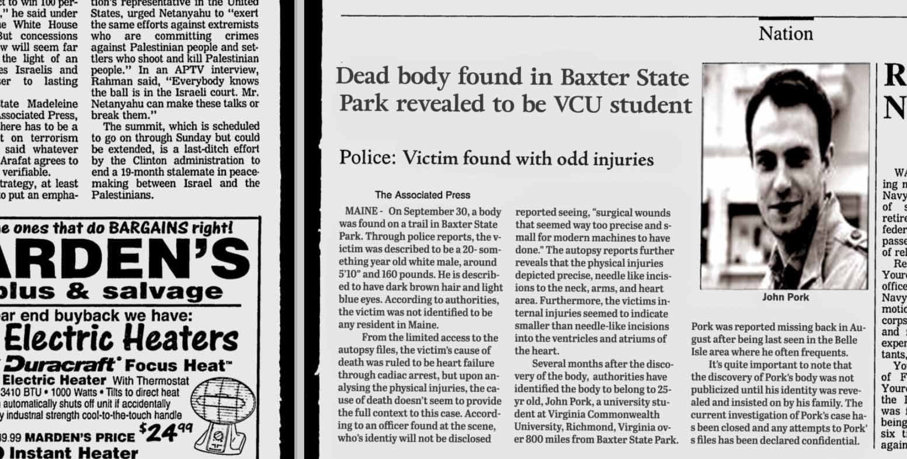

BLOG POSTS
Date: June 10, 2007
Autopsy Photo 2
Entry 22: Along with the autopsy report and heart photo, the other surviving photo that my contact recovered was that of John's arm. The injuries of his arm are strange. They seem like an imprints or a branding of sorts. I don't really know what to make of it.

BLOG POSTS
Date: June 10, 2007
Autopsy Photo 1
Entry 21: The first photo that my contact recovered was that of John's heart, which indicates these stitching patterns on his heart. Although, I don't know the medical context to this photo, they seem pretty advanced to me. Maybe, it was a case of alien abduction..

Date: June 10, 2007
Autopsy acquired
Entry 20: Finally, my contact was able to get the autopsy reports. Apparently, he had some trouble getting the file with authorities, but was able to secure a couple files. My contact told me most of the files were destroyed, but the ones I have now somehow survived. My sincere thanks to my contact, but below I have attached a copy of John's autopsy reports, which match the ones from the newspaper clipping.
Date: May 16, 2007
Autopsy Update
Entry #19: Two months has past and no word from my contact. I'm getting a bit worried for the safety of this person. Hopefully, all is well.
Date: March 16, 2007
Lucky Break
Entry #18: Finally, something good happens. A visitor of the page has submitted a tip that they know someone that might be able to get his hands on the autopsy report. I contacted this person a couple hours ago and they said they worked at the office before. I'm not gonna state his position of his role because it might give too much away, but apparently there's a hidden file that might store John's autopsy file.
Date: January 22, 2007
Autopsy Update
Entry #17: It's been almost a month and the coroner's office in Maine says they don't have an autopsy file of John Pork. I say thats a load of baloney.
Date: January 1, 2007
New Year
Entry #16:Happy New Years, I am currently stuck in a rut as I haven't able to find anything, but I am going to try to get my hands on John's autopsy.
Date: December 10, 2006
Anniversary
Entry #15: Today marks the 1 year anniversary since I started this website. It crazy to think I've spent a year investigating this case.
Date: October 5, 2006
I not quit
Entry #14: Nevermind, I'm too invested, but I am having a hard time finding more information on this case. I tried reaching out to Pork's family, but it seems they moved out of country since John's death and their whereabouts are unknown.
Date: June 14, 2006
Thinking
Entry #12: It's been a busy couple weeks in my personal life, but I've been thinking since my last post. While, I am still a little sceptical about extraterrestrials, aliens, and stuff of that nature, I am beginning to wonder if John's disappearance was due to an alien abduction. Additionally, the lack of media attention, especially for a case like this which I think would result in national headlines, was a result of a government cover up. Maybe I'm too invested in this...
Date: May 30, 2006
Page Change
Entry #11: Since the discovery of John Pork's case, I did some reworking on the page and decided to focus on John's case, hence the page name change.
Date: May 27, 2006
Maps
Entry #10: After doing some research on the location of John's death, I decided to create a map page, outlining John's travel path on the day of his disappearance. I did some basic calculations and showed some maps of the area, and its safe to say that its an impossibility for John to end up where was in that time frame.
Date: May 22, 2006
Discovery of John Pork 2
Entry #9: I'm still trying to rack my brain around this. How would a missing person that's discovered over 800 miles away, literally on the same day, not be publicized more? This should be like a national headline. Additionally, what are the autopsy reports talking about, these injuries seem kinda of outlandish. It would be really good if I could get my hands on it
Date: May 22, 2006
Discovery of John Pork
Entry #8: After a couple days of looking into Pork's case, I discovered something huge. The discovery of John's body. Apparently, John was found in Maine, over 800 miles from Belle Isle. I'm still a little sceptical about this though, because one, it's strange to have this publicized two months after his discovery. What's even crazier is that, apparently he had been found the same day that he disappeared. How would John have traveled over 800 miles the same day he disappeared, its impossible.

Date: May 20, 2006
Investigating John Pork
Entry #7: What I find strange about the disappearance of John Pork is that his case wasn't publicized as much as I thought it would be and wasn't publicized in any other newspaper other than this one. I tried looking into police records into John Pork, but I wasn't able to find anything. I'll report back when I have more information.
Date: May 20, 2006
Missing Person
Entry #6: After learning about the timeframe of the photos, I kept digging into context of these photos and stumbled upon an interesting discovery of a missing person case that happened during the same exact date, around the same time on August, 1998. This missing person was identified as then 25 yr. old, John Pork, a Virginia Commonwealth Universiy student that went missing under strange circumstances. The cirucmstances around his disappearance is quite strange because of the fact that he disappeared on a popular trail on Belle Isle where a couple of people reported seeing him past them, but then to disappear all of sudden when looking back.

Date: May 14, 2006
Third Photo
Entry #5: Another shocking discovery. I found a third photo. This time from a person, a middle aged man which his identity, I will not disclose, who I stumbled upon in the library. I was researching the "orbs," which I have come to call them when this man approached me saying that he's seen these things before back in August 15, 1998. He said it was for a brief bit, but in that time he was able to take a picture. He kindly let me take a picture.
Date: April 30, 2006
Second Photo
Entry #4: I can't believe it. I found a second photo of these mysterious objects in a trail thats relatively used quite often. I can't believe no one has noticed it. It seems that these photos happened at the same time.

Date: February 1, 2005
Nothing
Entry #3: It's been almost 3 months since my last post and I haven't been able to find anything about it. It seems no knows the origin of this photo or have sighted anything like this before.
Date: December 10, 2005
The Photo
Entry #2: Here is the photo and video of me finding the photo a couple months back. I was walking through a densely covered trail that I stumbled upon in Belle Isle, Richmond, where the photo was found. The photo is quite aged, but it depicts three unidentifiable round objects in the sky near the James river.

Date: December 10, 2005
The Beginning
Entry #1: This is my first post on this photo that I came upon a few months back. I stumbled upon this photo back in October and its been on my mind since. Its quite a peculiar picture and I decided to investigate it. Through this site, I decided to journal my investigation into this photo.
{kind=link}
{kind=link}
{kind=link}